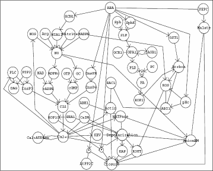

NET-SYNTHESIS: A software for synthesis, inference and simplification
of signal transduction networks

Our software performs combined synthesis, inference and
simplification of signal
transduction networks. The main idea of the application lies in
representing observed
indirect causal relationships as network paths, introducing
pseudo-vertices for unknown intermediaries of these paths and using
techniques from combinatorial optimization to find the most
parsimonious graph consistent with all experimental observations. The
software contains algorithms for (i) transitive reduction of an
initially synthesized graph subject to the constraints that no edges
corresponding to direct interactions are eliminated and (ii)
pseudo-vertex collapse subject to the constraints that real (known)
vertices are not eliminated.
Some relevant publications
-
Réka Albert, Bhaskar DasGupta, Anthony Gitter, Gamze Gürsoy, Rashmi Hegde, Pradyut Pal, Gowri Sangeetha Sivanathan and Eduardo Sontag, A New Computationally Efficient Measure of Topological Redundancy of Biological and Social Networks, Physical Review E, 84 (3), 036117, 2011.
It is well-known that biological and social interaction networks have a varying degree of redundancy,
though a consensus of the precise cause of this is so far lacking. In this paper, we introduce a topological
redundancy measure for labeled directed networks that is formal,
computationally efficient and applicable to a variety of directed
networks such as cellular signaling, metabolic and social interaction networks. We demonstrate the computational efficiency of our measure
by computing its value and statistical significance on a number of biological and social networks with up to
several thousands of nodes and edges.
Our results suggest a number of interesting observations:
-
social networks are more redundant that their biological counterparts,
-
transcriptional networks are less redundant than signaling networks,
-
the topological redundancy of the C. elegans metabolic network is largely due to its
inclusion of currency metabolites, and
-
the redundancy of signaling networks is highly (negatively) correlated with the monotonicity
of their dynamics.
-
Réka Albert, Bhaskar DasGupta, Riccardo Dondi and Eduardo Sontag,
Inferring (Biological) Signal Transduction Networks via Transitive Reductions of
Directed Graphs,
Algorithmica,
51 (2), 129-159, 2008.
In this paper
we consider the p-ary transitive reduction (TRp) problem where
p>0 is an integer;
for p=2 this problem
arises in inferring a sparsest possible
(biological) signal transduction network
consistent with a set of experimental observations
with a goal to minimize false positive
inferences even if risking false negatives.
In this paper, our contributions are as follows:
-
We observe that TRp, for any integer
p>0, can be solved in linear time
for directed acyclic graphs.
-
We provide a 1.78-approximation
for TR1 that improves the 2-approximation
known before.
-
We provide a 2+o(1)-approximation for TRp on general graphs
for any fixed prime p>1.
-
Réka Albert, Bhaskar DasGupta, Riccardo Dondi, Sema Kachalo, Eduardo Sontag, Alexander
Zelikovsky and Kelly Westbrook,
A Novel Method for
Signal Transduction Network Inference from Indirect Experimental Evidence,
Journal of Computational Biology
,
14 (7), 927-949, 2007
(extended abstract in
7th Workshop on Algorithms in Bioinformatics (WABI),
R. Giancarlo and S. Hannenhalli (Eds.), LNBI 4645,
Springer-Verlag, 407-419, 2007).
We introduce a new method of combined synthesis and inference of biological signal
transduction networks.
A main idea of our method lies in representing observed causal relationships as network paths and using
techniques from combinatorial optimization to find the sparsest graph consistent with all experimental observations.
Our contributions are twofold:
-
we formalize our approach, study its computational complexity and prove new results
for exact and approximate solutions of the computationally hard transitive reduction
substep of the approach;
-
we validate the biological
usability of our approach by successfully
applying it to a previously published signal transduction network by
Li et al. and show that our algorithm
for the transitive reduction substep
performs well
on graphs with a structure similar to those observed in transcriptional
regulatory and signal transduction networks.
-
Sema Kachalo, Ranran Zhang, Eduardo Sontag, Réka Albert and
Bhaskar DasGupta,
NET-SYNTHESIS: A software for synthesis, inference and simplification of signal transduction networks,
Bioinformatics,
24 (2), 293-295, 2008
We present a software for combined synthesis, inference and simplification of signal
transduction networks. The main idea of our method lies in representing observed
indirect causal relationships as network paths and using
techniques from combinatorial optimization to find the sparsest graph consistent
with all experimental observations.
We illustrate the biological usability of our software by
applying it to a previously published signal transduction network
and by using it to synthesize and simplify a novel
network corresponding to activation induced cell death in large granular lymphocyte leukemia.
Software-related links
Copyright (C) 2006 Semen Kachalo.
This program is free software; you can redistribute it and/or modify it under the terms of the
GNU General Public License as published by the Free Software Foundation; either version 2 of the License,
or (at your option) any later version.
This program is distributed in the hope that it will be useful, but
WITHOUT ANY WARRANTY; without even the implied warranty of MERCHANTABILITY or FITNESS FOR A
PARTICULAR PURPOSE. See the GNU General Public License for more details.